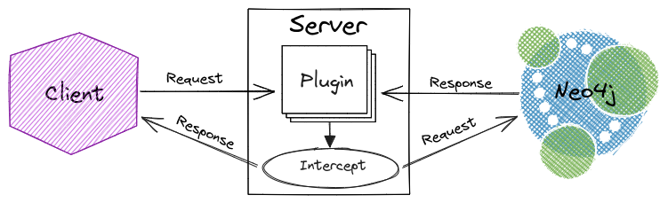

graph-guard


graph-guard is an extensible Bolt proxy server,
that's capable of performing realtime Cypher query validation,
for Neo4j 5+ (compatible databases).
Design
The Server proxies Bolt messages as displayed in the diagram below.

Proxied messages are intercepted by the Plugin, enabling the Server to dynamically transform the incoming and outgoing data.
Validator is a Plugin that performs realtime query validation by intercepting RUN requests then analyzing the Cypher (and parameters) for schema violations. If the intercepted query is determined to be invalid according to the schema, then a FAILURE response is sent to the client.
For example, validate movies queries align with the schema via the Server, using the graph-guard library.
/** Use the [driver] to run queries that violate the *movies* schema. */
fun runInvalidMoviesQueries(driver: Driver) {
driver.session().use { session ->
for (query in
listOf(
"CREATE (:TVShow {title: 'The Office', released: 2005})",
"MATCH (theMatrix:Movie {title: 'The Matrix'}) SET theMatrix.budget = 63000000",
"MERGE (:Person {name: 'Chris Fraser'})-[:WATCHED]->(:Movie {title: 'The Matrix'})",
"MATCH (:Person)-[produced:PRODUCED]->(:Movie {title: 'The Matrix'}) SET produced.studio = 'Warner Bros.'",
"CREATE (Keanu:Person {name: 'Keanu Reeves', born: '09/02/1964'})")) {
// run the invalid query and print the schema violation message
try {
session.run(query)
error("Expected schema violation for query '$query'")
} catch (exception: DatabaseException) {
println(exception.message)
}
}
}
}
val plugin = Validator(Schema(MOVIES_SCHEMA))
val server = Server(boltURI(), plugin, InetSocketAddress("localhost", 8787))
server.use {
GraphDatabase.driver("bolt://localhost:8787", Config.builder().withoutEncryption().build())
.use(::runInvalidMoviesQueries)
}
The code above prints the following schema violation messages.
Unknown node TVShow
Unknown property 'budget' for node Movie
Unknown relationship WATCHED from Person to Movie
Unknown property 'studio' for relationship PRODUCED from Person to Movie
Invalid query value(s) '09/02/1964' for property 'born: Integer' on node Person
Schema
A schema describes the nodes and relationships in a graph. The schema is defined using a custom DSL language, demonstrated below for the movies graph.
graph Movies {
node Person(name: String, born: Integer):
ACTED_IN(roles: List<String>) -> Movie,
DIRECTED -> Movie,
PRODUCED -> Movie,
WROTE -> Movie,
REVIEWED(summary: String, rating: Integer) -> Movie;
node Movie(title: String, released: Integer, tagline: String);
}
Graph
A graph contains node statements. A schema may include multiple
interconnected graphs. To reference a node in another graph, qualify the node name
with the graph name, as shown below.
Nodes
A node must have a unique name, and may
have properties and/or relationship definitions.
Relationships
Relationships are defined relative to the source node. A relationship definition must
have a name, direction (-> for directed, or -- for undirected), and target node. A relationship
must have a unique (source)-[name]-(target), and may also have properties.
Properties
A node or relationship may have typed properties. The supported property types are listed below.
The types align with the supported Cypher values.
Any- a dynamically typed propertyBooleanDate- a date()DateTime- a datetime()Duration- a duration()FloatIntegerList<T>- whereTis another (un-parameterized) supported typeLocalDateTime- a localdatetime()LocalTime- a localtime()StringTime- a time()- String literal - any value enclosed in double quotation marks, e.g.
"example"
A property can be designated as nullable by including the ? suffix on the type, for
example String? and List<Any?>.
The omission of a type results in the usage of
Any?, which effectively disables property value validation.
A property may specify multiple types of values with the union type syntax, as shown below.
Metadata
A node, relationship, or property may have arbitrary metadata.
Currently, the metadata is purely information, it isn't used in schema verification.
The metadata annotations can have any name, and may include a string literal value within parenthesis.
Violations
The Cypher query validation prevents the following schema violations.
"Unknown ${entity}"- a query has a node or relationship not defined in the schema"Unknown property '${property}' for ${entity}"- a query has a property (on a node or relationship) not defined in the schema"Invalid query value(s) '${values}' for property '${property}' on ${entity}"- a query has property value(s) (on a node or relationship) conflicting with the type defined in the schema
Grammar
Refer to the (antlr4) grammar for an exact specification of the schema DSL.
Usage
The graph-guard* libraries are accessible
via Maven Central
and the graph-guard-cli application is published in
the releases.
graph-guardrequires Java 17+.
Serverdoesn't currently support TLS (because of ktor-network limitations). Use NGINX or a cloud load balancer to decrypt Bolt traffic for the proxy server.
Examples
Refer to the snippets below to see how to initialize and run a Server with the graph-guard
library.
Kotlin
/** [Server.run] `this` [Server] in a [thread] then execute the [block]. */
fun Server.use(wait: Duration = 1.seconds, block: () -> Unit) {
val server = thread(block = ::run) // run the server until the thread is interrupted
Thread.sleep(wait.toLong(DurationUnit.MILLISECONDS)) // wait for the server to start in separate thread
try {
block() // execute a function interacting with the server
} finally {
server.interrupt() // interrupt the thread running the server to initiate a graceful shutdown
}
}
Server(
boltURI(),
plugin { // define plugin using DSL
intercept { _, message -> message.also(::println) }
observe { event -> println(event) }
})
.use { TODO("interact with the running server") }
Java
Server.Plugin plugin = // implement async plugin; can't utilize Kotlin coroutines plugin interface in Java
new Server.Plugin.Async() {
@NotNull
@Override
public CompletableFuture<Message> interceptAsync(
@NotNull String session, @NotNull Bolt.Message message) {
return CompletableFuture.supplyAsync(
() -> {
System.out.println(message);
return message;
});
}
@NotNull
@Override
public CompletableFuture<Void> observeAsync(@NotNull Server.Event event) {
return CompletableFuture.supplyAsync(
() -> {
System.out.println(event);
return null;
});
}
};
Thread server = new Thread(new Server(boltURI(), plugin));
server.start(); // run the server until the thread is interrupted
Thread.sleep(1_000); // wait for the server to start in separate thread
/* TODO: interact with the running server */
server.interrupt(); // interrupt the thread running the server to initiate a graceful shutdown
Documentation
Refer to the graph-guard website.
CLI
Download and run the graph-guard-cli application.
curl -OL https://github.com/c-fraser/graph-guard/releases/latest/download/graph-guard-cli.tar
mkdir graph-guard-cli
tar -xvf graph-guard-cli.tar --strip-components=1 -C graph-guard-cli
./graph-guard-cli/bin/graph-guard-cli --help
Refer to the demo (and source script).
Libraries
The following graph-guard-* libraries provide types and/or implementations to facilitate
augmenting Server
functionality.
graph-guard-validate
graph-guard-validate
defines Rule,
which is the basis for query validation, through
the Validator
plugin. Schema
is
the Rule
that evaluates whether a Cypher query contains schema violations. Refer
to Patterns
for additional
Cypher Rule
implementations.
graph-guard-script
Script.evaluate enables plugins to be compiled and loaded from a Kotlin script. The Script.Context exposes a DSL to build plugins.
For example, use a plugin script with the Server.
val script = """
@file:DependsOn(
"io.github.resilience4j:resilience4j-ratelimiter:2.2.0",
"io.github.resilience4j:resilience4j-kotlin:2.2.0")
import io.github.resilience4j.kotlin.ratelimiter.RateLimiterConfig
import io.github.resilience4j.kotlin.ratelimiter.executeSuspendFunction
import io.github.resilience4j.ratelimiter.RateLimiter
import java.util.concurrent.atomic.AtomicInteger
plugin {
val rateLimiter = RateLimiter.of("message-limiter", RateLimiterConfig {})
intercept { _, message -> rateLimiter.executeSuspendFunction { message } }
}
plugin {
val messages = AtomicInteger()
intercept { _, message ->
if (messages.getAndIncrement() == 0) println(message::class.simpleName)
message
}
}
"""
val plugin = Script.evaluate(script)
val server = Server(boltURI(), plugin)
server.use(wait = 10.seconds) { server.driver.use(block = ::runMoviesQueries) }
Script compilation and evaluation takes longer, thus the 10 second
wait.
The code above prints the following message.
License
Copyright 2023 c-fraser
Licensed under the Apache License, Version 2.0 (the "License");
you may not use this file except in compliance with the License.
You may obtain a copy of the License at
https://www.apache.org/licenses/LICENSE-2.0
Unless required by applicable law or agreed to in writing, software
distributed under the License is distributed on an "AS IS" BASIS,
WITHOUT WARRANTIES OR CONDITIONS OF ANY KIND, either express or implied.
See the License for the specific language governing permissions and
limitations under the License.